Authors: Noah Goss, Nishchay Suri, Brian Marinelli, Larry Chen, Akel Hashim, Sajant Anand, Alexis Morvan, Ravi K. Naik, Ermal Rrapaj, David I. Santiago, Wibe de Jong, Norman Y. Yao, Joel E. Moore, Irfan Siddiqi
Type: experiment · Category: quantum information and computing · PDF: https://arxiv.org/pdf/2605.14293v1
Analysis basis: full PDF text, analyzed in chunks
Topic relevance: 🔥 QC/QI experiment 5/5 · 🔥 driven-dissipative phase transition 4/5 · 🔥 non-equilibrium dynamics 4/5 · non-equilibrium universality 2/5 · scars & prethermalization 2/5
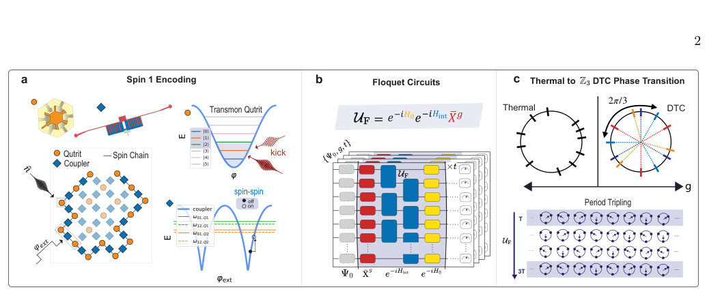
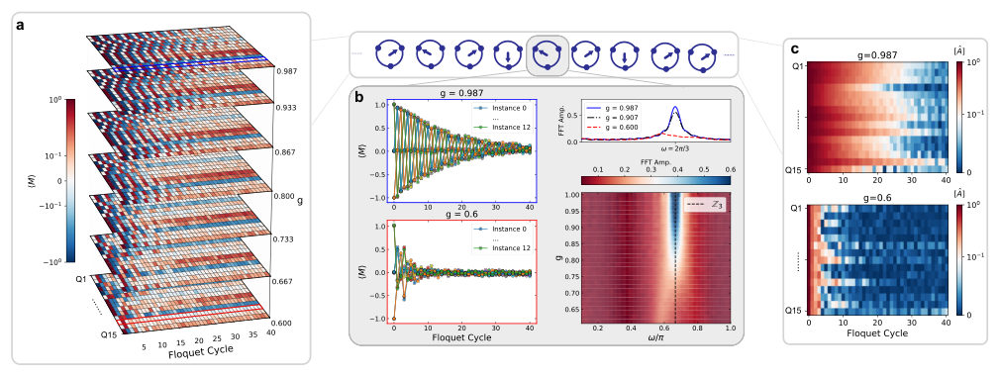
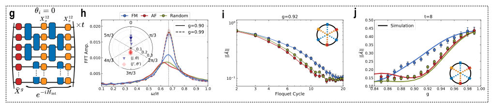
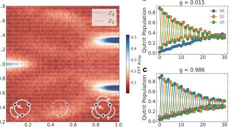
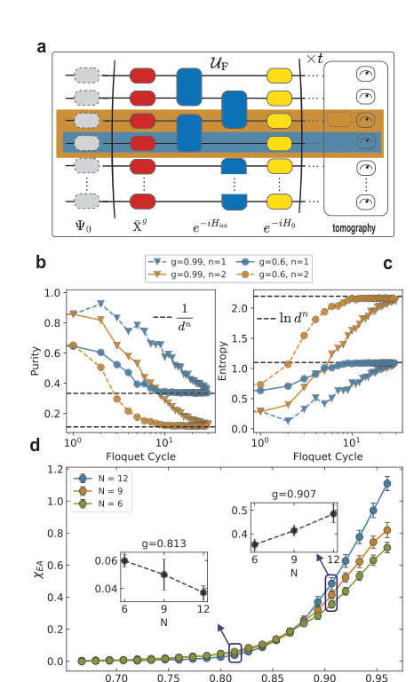
Summary. The researchers successfully realized a Z3 discrete time crystal using a chain of 15 superconducting qutrits. By utilizing native chiral interactions, they were able to stabilize period-tripling oscillations and prevent the destabilizing effects of domain wall degeneracies. This work highlights the potential of qudit-based processors for exploring complex non-equilibrium phases.
Why it may be interesting. It demonstrates how engineering specific interaction symmetries (chirality) and utilizing higher-dimensional qudit (qutrit) hardware can access and stabilize exotic non-equilibrium phases of matter that are otherwise unstable in qubit-based systems.
Main problem. The challenge of stabilizing higher discrete symmetry (Z3) discrete time crystals (DTCs) due to domain wall degeneracies that prevent the formation of stable, long-range order.
Main result. Demonstration of a robust Z3 DTC in a 15-qutrit superconducting chain, where native chiral interactions are shown to stabilize the period-tripling phase and prevent initial state dependence.
Method. Implementation of a Floquet chiral clock model using a 20-transmon processor with tunable couplers, utilizing microwave-driven gates, flux-pulsing for interactions, and many-body localization (MBL) to prevent heating.
Model / system. A 1D chain of 15 superconducting qutrits (spin-1) implemented on a 2D grid of 20 flux-tunable transmons and tunable couplers, following a Floquet chiral clock model with Z3 symmetry.
Key observables. Spin-1 magnetization, Fourier transform of magnetization (to detect period tripling), autocorrelators, and the Edwards-Anderson order parameter (chi_EA).
Important parameters / regimes. Kicking strength (g), chiral angle (theta), coupling strength (J), and system size (N).
Assumptions / limitations. The system relies on many-body localization to prevent Floquet heating and assumes that the experimental decay is primarily limited by intrinsic system decoherence rather than gate errors.
Figures summary. Figures show the processor layout, coherence statistics, single-qutrit gate calibration workflow, magnetization spectroscopy (FFT), and the scaling of the Edwards-Anderson order parameter across different chain lengths.
Paper structure. The paper introduces the problem of Z3 DTC stability, describes the superconducting qutrit hardware and chiral clock model implementation, details the calibration and control methods, presents the experimental observation of period tripling and the role of chirality, and concludes with phase transition analysis and scaling.
Periodically driven quantum many-body systems can spontaneously break discrete time-translation symmetry, realizing discrete time crystals. To date, both experimental and theoretical efforts have largely focused on the simplest case of spontaneous period-doubling in $\mathbb{Z}_2$ discrete time crystals realized with qubits. This owes, in part, to the challenge of stabilizing eigenstate order in higher discrete symmetry ($\mathbb{Z}_n$) time crystals, due to the presence of richer domain wall physics. Here, we demonstrate the realization of a $\mathbb{Z}_3$ discrete time crystal by implementing a Floquet chiral clock model in a chain of 15 superconducting qutrits. Unlike the conventional Ising setting, our system features a tunable chiral angle that governs domain-wall dynamics, spectral degeneracies, and crucially, the stability of time-crystalline order. Using disordered nearest-neighbor chiral interactions, we observe robust subharmonic period tripling that persists across a wide range of drive strengths and is independent of initial state. Finally, we highlight the special role that chirality plays in our $\mathbb{Z}_3$ discrete time crystal -- in its absence, the system's Floquet dynamics exhibit a marked initial state dependence governed by domain wall degeneracies. Our results establish native qudit hardware as a powerful platform to access a broader landscape of non-equilibrium phases.
Authors: Xuan Ye, Hong-Jin Xiong, Alexey Kavokin, Sanjib Ghosh
Type: theory · Category: quantum gases · PDF: https://arxiv.org/pdf/2605.14250v1
Analysis basis: full PDF text, analyzed in chunks
Topic relevance: 🔥 driven-dissipative phase transition 5/5 · 🔥 correlated / nonlocal dissipation 4/5 · non-equilibrium dynamics 3/5 · methods for driven-dissipative 2/5
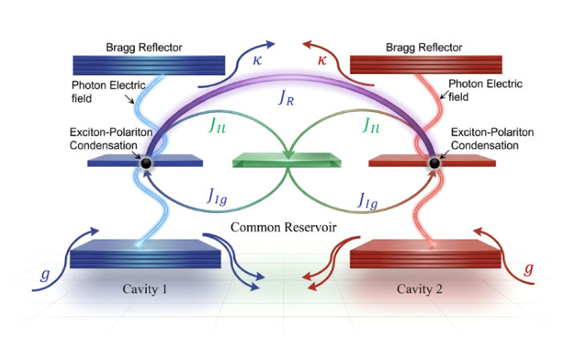
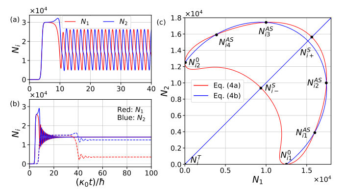
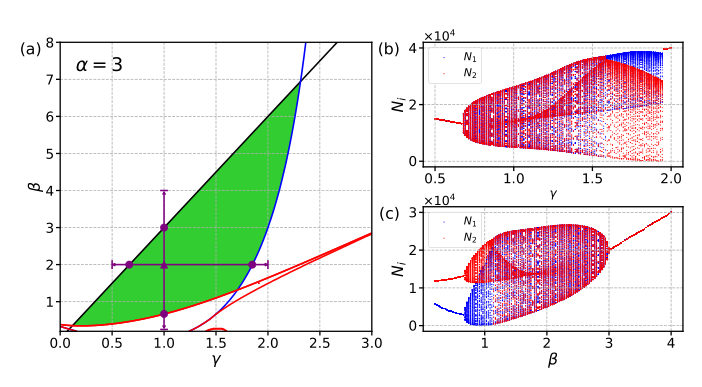
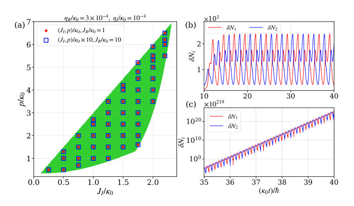
Summary. This paper shows that time crystals can spontaneously emerge in coupled exciton-polariton condensates using only the inherent gain and loss of the microcavity. It provides a theoretical threshold for this phase based on nonlinearity ratios and proves that the resulting oscillations are robust against quantum noise. This discovery offers a new way to realize time-crystalline behavior without the need for complex external driving.
Why it may be interesting. This work is highly relevant for researchers in open quantum systems and quantum optics as it identifies a novel mechanism for spontaneous time-translation symmetry breaking driven by intrinsic dissipation rather than external periodic driving.
Main problem. Investigating whether a time crystal phase can emerge in coupled exciton-polariton condensates without periodic external driving and determining its robustness against quantum fluctuations.
Main result. The authors demonstrate that time crystals can emerge via time-independent gain and dissipation channels, provided the ratio of Kerr nonlinearity to nonlinear dissipation exceeds sqrt(5/4), and show that this phase is robust against leading-order quantum corrections.
Method. The study uses a Lindblad master equation approach, mean-field analysis via coupled Stuart-Landau equations, Jacobian matrix stability analysis, and Bogoliubov perturbation theory to evaluate quantum fluctuations.
Model / system. The system consists of coupled exciton-polariton condensates in semiconductor microcavities, modeled by a Lindblad master equation including local linear gain, dissipation, nonlinear dissipation, and correlated gain/dissipating channels via a shared reservoir.
Key observables. Particle numbers (N_i) and phase difference (phi).
Important parameters / regimes. Nonlinearity ratio (alpha = eta_R/eta_I), gain/pumping parameter (beta = p/J_R), coupling parameter (gamma = J_I/J_R), and the regime of gain-dominated systems (p > 0, J_I > 0).
Assumptions / limitations. The analysis assumes a mean-field approximation for the underlying dynamics and relies on the validity of Bogoliubov perturbation theory where quantum corrections remain small.
Figures summary. Figure 1 shows the microcavity setup; Figure 2 illustrates periodic oscillations and steady-state convergence; Figure 3 presents the phase diagram in the (gamma, beta) plane; Figure 4 compares stable versus divergent quantum fluctuations.
Paper structure. The paper introduces the problem of driving-free time crystals, describes the microcavity model and master equation, presents mean-field stability analysis and phase diagrams, evaluates quantum corrections using Bogoliubov theory, and concludes with a discussion on the robustness of the phase.
In this paper, we show that time crystals can emerge in coupled exciton-polariton condensates without periodic external driving, enabled instead by incoherent gain and dissipation channels inherent to semiconductor microcavities. We present a full quantum description of these processes that recovers the established effective theory at the mean-field level. We analytically determine the mean-field phase diagram for the time-crystalline phase and find that its emergence requires the ratio of Kerr nonlinearity to nonlinear dissipation to exceed $\sqrt{5/4}$. Within this regime, the periodic oscillation of the particle numbers forms an attractor that is insensitive to the initial conditions. Numerical bifurcation diagrams reveal transitions between the time-crystalline phase and various steady phases, in excellent agreement with the analytical results. Using Bogoliubov perturbation theory, we evaluate the leading-order quantum corrections and find that, over a wide parameter range, these corrections remain periodic and much smaller than the mean-field background, thereby establishing the robustness of the time crystal.
Authors: Young-Do Yoon, Chan Roh, Geunhee Gwak, Young-Sik Ra
Type: both · Category: quantum information and computing · PDF: https://arxiv.org/pdf/2605.14858v1
Analysis basis: full PDF text, analyzed in chunks
Topic relevance: 🔥 quantum optics experiment 5/5 · 🔥 QC/QI experiment 4/5 · 🔥 quantum measurements 4/5
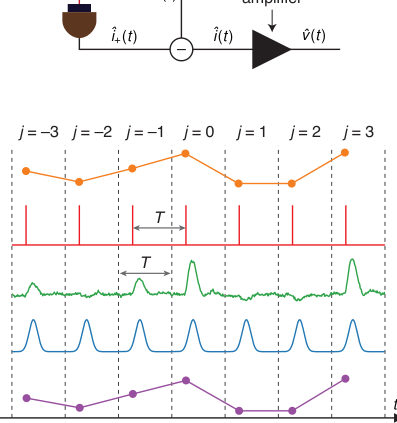
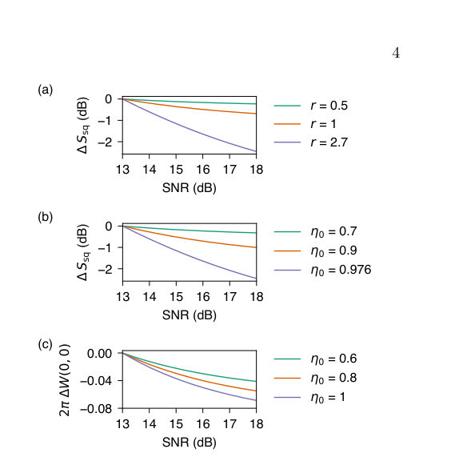
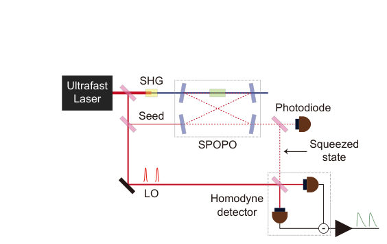
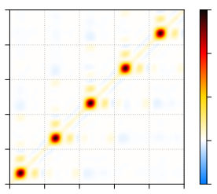
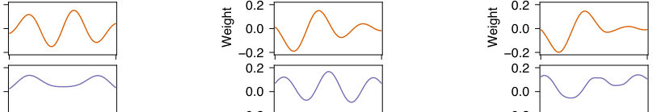
Summary. The paper presents a method to improve the detection efficiency of ultrafast quantum light by optimizing the temporal weights used in homodyne detection. By accounting for detector response and electronic noise, the authors significantly enhance the observable squeezing and non-Gaussianity of pulsed quantum states.
Why it may be interesting. This work is highly relevant to quantum optics and photonic quantum information as it provides a practical method to recover high-fidelity quantum states from noisy, high-speed experimental measurements.
Main problem. Efficient homodyne detection of ultrafast continuous-variable quantum states is limited by slow detector response and electronic noise, which degrades the signal-to-noise ratio (SNR) and obscures nonclassical features.
Main result. By optimizing a temporal weight function using a generalized Rayleigh quotient approach, the authors achieved a 135% increase in SNR compared to constant weighting, leading to enhanced observation of squeezing and Wigner-function negativity.
Method. The authors formulate the optimization of the temporal weight as a generalized Rayleigh quotient problem to maximize SNR, utilizing a truncated Fourier-basis to regularize against sampling errors.
Model / system. An experimental ultrafast homodyne detection setup using a Ti:sapphire laser, a spontaneously pumped optical parametric oscillator (SPOPO) for squeezed vacuum, and a transimpedlamperance amplifier-based detector.
Key observables. Signal-to-noise ratio (SNR), detection efficiency, squeezing and anti-squeezing levels, Wigner-function negativity, and noise statistics (skewness and kurtosis).
Important parameters / regimes. 80 MHz repetition rate, 75 fs pulse duration, 800 nm wavelength, 10 GSa/s sampling rate, and 13-18 dB SNR range.
Assumptions / limitations. Electronic noise is assumed to be stationary; the detector response is modeled via a circuit-based impulse response.
Figures summary. Fig 1: Detection scheme; Fig 2: Enhancement of nonclassical features vs SNR; Fig 3: Experimental setup; Fig 4: Detector characterization (power spectra and pulse response); Fig 5: Autocorrelation matrices; Fig 6: Performance comparison of weight vectors; Fig 7: Histograms of quadrature outcomes.
Paper structure. The paper introduces the challenge of ultrafast detection, presents a mathematical optimization framework for temporal weighting, details the experimental implementation and detector characterization, and concludes with a performance comparison of different weighting strategies and noise statistics.
Ultrafast continuous-variable quantum states offer new opportunities for advanced quantum technologies, but efficient homodyne detection of these states remains challenging. Here, we present a method for efficient ultrafast homodyne detection by exploiting temporal correlations in detector signals. By optimizing the temporal weight used to extract quadrature outcomes, we achieve a substantial increase in the signal-to-noise ratio of ultrafast homodyne detection, thereby improving the detection efficiency. We analyze the autocorrelations of shot noise and electronic noise and determine the optimal weight by solving a generalized Rayleigh quotient problem. The optimal weight enhances the squeezing and anti-squeezing levels observed experimentally. These results highlight the importance of optimized signal processing for efficient quantum measurements.
Authors: Zhisheng Xu, Mengxue Li, Chunfang Sun, Gangcheng Wang
Type: theory · Category: quantum information and computing · PDF: https://arxiv.org/pdf/2605.14394v1
Analysis basis: full PDF text, analyzed in chunks
Topic relevance: 🔥 spintronics-quantum-optics interface 5/5 · entanglement & information structure 3/5 · non-equilibrium dynamics 2/5
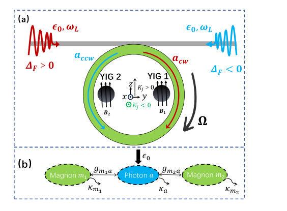
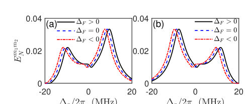
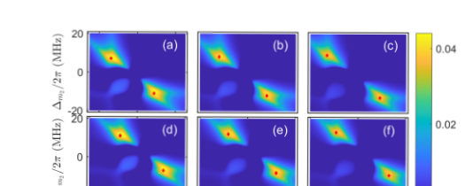
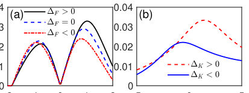
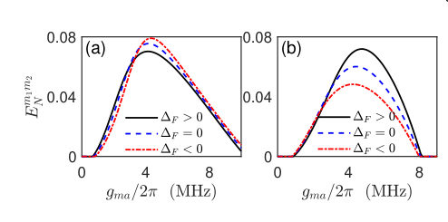
Summary. This paper proposes a method to create directional (nonreciprocal) entanglement between two magnon modes in a spinning cavity system. By leveraging the Sagnac effect from cavity rotation and the Kerr nonlinearity of magnons, the researchers show that entanglement can be precisely controlled and remains stable even at relatively high temperatures.
Why it may be interesting. It provides a theoretical framework for using mechanical rotation (Sagnac effect) and nonlinearities to engineer directional quantum correlations, which is highly relevant for developing nonreciprocal quantum networks and devices.
Main problem. The generation and control of nonreciprocal magnon-magnon entanglement in a hybrid cavity-magnon system using the Sagnac and Kerr effects.
Main result. The study demonstrates that magnon-magnon entanglement can be nonreciprocally enhanced or suppressed by tuning the Sagnac-Fizeau shift and the magnon Kerr nonlinearity, with entanglement remaining robust up to temperatures of 100 mK.
Method. The authors use Quantum Langevin Equations and a linearized effective Hamiltonian, applying a joint unitary squeezing transformation and solving the Lyapunov equation to quantify entanglement via logarithmic negativity.
Model / system. A hybrid system consisting of two Yttrium Iron Garnet (YIG) spheres coupled to a spinning whispering-gallery-mode (WGM) cavity, where the cavity rotation induces a Sagnac-Fizeau shift and the magnons exhibit Kerr nonlinearity.
Key observables. Magnon-magnon entanglement (logarithmic negativity), average photon number, and average magnon numbers.
Important parameters / regimes. Sagnac-Fizeau frequency shift (Delta_F), magnon Kerr coefficient (K_j), coupling strength (g_mj,a), decay rates (kappa), and bath temperature (T).
Assumptions / limitations. The system is in a strong driving regime allowing for linearization, the Markovian approximation is used for input noise, and the relativistic dispersion term in the Sagnac effect is neglected.
Figures summary. Fig 1 shows the system schematic and coupling configuration; Fig 3-5 show entanglement dependence on Sagnac/Kerr shifts and detuning; Fig 6-8 show the effects of coupling strength and decay rates; Fig 9 shows the survival of entanglement with temperature.
Paper structure. The paper introduces the hybrid system, defines the Hamiltonian and linearized dynamics, derives the resonance condition via a squeezing transformation, analyzes the impact of various physical parameters on entanglement, and concludes with the robustness of the system against thermal noise.
Cavity-magnon systems, combining magnons and photons, offer a versatile platform for studying quantum entanglement and advancing quantum information science. In this work, we propose a scheme for generating nonreciprocal magnon-magnon entanglement in a hybrid system consisting of two yttrium iron garnet spheres coupled to a spinning whispering-gallery-mode cavity. By leveraging the magnon Kerr nonlinearity and the Sagnac effect arising from the cavity rotation, we show that the entanglement can be substantially enhanced, and the resulting entanglement exhibits pronounced nonreciprocal characteristics. Furthermore, our scheme demonstrates that the entanglement remains robust against thermal noise and persists at bath temperatures up to 100 mK. This work underscores the potential of spinning cavity-magnon systems as a versatile platform for realizing nonreciprocal quantum devices and facilitating the development of quantum technologies.
Authors: Arman Duha, Thomas Bilitewski
Type: theory · Category: other · PDF: https://arxiv.org/pdf/2605.13969v1
Analysis basis: full PDF text, analyzed in chunks
Topic relevance: 🔥 driven-dissipative phase transition 4/5 · 🔥 non-equilibrium dynamics 4/5 · 🔥 non-equilibrium universality 4/5 · Keldysh / 2PI / non-Gaussian methods 3/5 · Rydberg arrays 3/5 · analog quantum simulation 3/5 · entanglement & information structure 3/5 · exotic spin models in light-matter 3/5 · methods for driven-dissipative 2/5
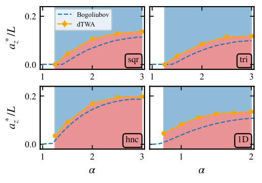
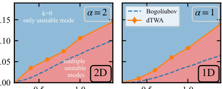
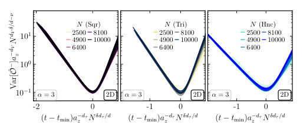
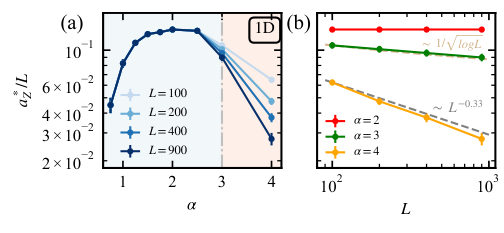
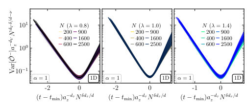
Summary. This paper proves that the dynamical phase transition in spin squeezing is universal across different lattice geometries and dimensions. It identifies a new scaling regime for short-range interactions and shows that the transition can be controlled by tuning interlayer couplings, offering a way to engineer entanglement in quantum simulators.
Why it may be interesting. It provides a versatile route for controlling entanglement generation through interaction engineering and uncovers new scaling physics in the short-range regime, which is highly relevant for designing quantum sensors in Rydberg and trapped-ion arrays.
Main problem. The study investigates the universality of a dynamical spin-squeezing phase transition in power-law interacting bilayer spin models across different lattice geometries, dimensions, and coupling strengths.
Main result. The authors establish that the dynamical squeezing transition is universal across various 1D and 2D geometries and identify a new sub-linear scaling regime for the critical aspect ratio in the short-range interaction regime.
Method. The research combines Bogoliubov instability analysis using Holstein-Primakoff transformations with numerical simulations using the discrete Truncated Wigner Approximation (dTWA).
Model / system. The system consists of power-law interacting spin-1/2 bilayer XXZ-type models, including 1D ladders and 2D square, triangular, and honeycomb lattices, with interactions decaying as r^-alpha.
Key observables. Spin squeezing (variance of mixed quadratures), phase sensitivity, and the scaling exponent p of the minimal variance.
Important parameters / regimes. Power-law exponent (alpha), interlayer coupling ratio (lambda), and the aspect ratio (aZ/L).
Assumptions / limitations. The Bogoliubov analysis is a quadratic-order approximation that may systematically underestimate the critical aspect ratio due to the omission of non-linear corrections.
Figures summary. Figures compare Bogoliubov and dTWA predictions for phase boundaries, show scaling collapses for different lattice geometries and coupling ratios, and illustrate momentum-dependent dispersion relations.
Paper structure. The paper introduces the dynamical transition, presents Bogoliubov-based analytical scaling laws, demonstrates universality via numerical scaling collapses across geometries and couplings, and discusses experimental implications for Rydberg and trapped-ion platforms.
Recent work has identified a dynamical squeezing phase transition in power-law interacting bilayer XXZ spin models, separating a fully collective phase with Heisenberg-limited squeezing from a partially-collective phase with universal critical scaling. Here we test and establish the universality of this transition along two qualitatively different microscopic axes: lattice geometry, by studying square, triangular, and honeycomb $2\mathrm{D}$ bilayers as well as $1\mathrm{D}$ ladders, and a symmetry-preserving rescaling $λ$ of the interlayer couplings relative to the intralayer ones. Combining a Bogoliubov instability analysis with discrete truncated Wigner simulations, we find that the transition persists across all four lattice geometries and over a wide range of $λ$ with critical exponents consistent within error, providing strong evidence for a genuine non-equilibrium universality class. The Bogoliubov theory recovers the previously identified scaling $a_Z^* \propto L$ in the long-range interacting regime $α< d+2$, and yields an analytical scaling $a_Z^* \propto L^{2/(α-d)}$ for the critical aspect ratio with system size for $α>d+2$, with $α$ the power-law exponent in dimension $d$. This uncovers a previously unrecognized sub-linear regime for short-range interactions. By tuning $λ$ we vary the interlayer coupling strength at fixed layer spacing, demonstrating that the dynamical transition can be driven purely through interaction engineering without modifying the underlying geometry. These findings provide a versatile route toward controlling entanglement generation in Rydberg-array, polar molecule, and trapped-ion platforms with applications in quantum sensing and simulation.
Authors: Mohamed Meguebel, Maxime Federico, Louis Garbe, Nadia Belabas, Nicolas Fabre
Type: theory · Category: other · PDF: https://arxiv.org/pdf/2605.14100v1
Analysis basis: full PDF text, analyzed in chunks
Topic relevance: 🔥 Tavis-Cummings & cavity-many-emitter 4/5 · methods for driven-dissipative 3/5 · Dicke superradiance 2/5 · Keldysh / 2PI / non-Gaussian methods 2/5 · analog quantum simulation 2/5 · correlated / nonlocal dissipation 2/5 · correlated cavity matter 2/5 · exotic spin models in light-matter 2/5 · free-space correlated emission 2/5
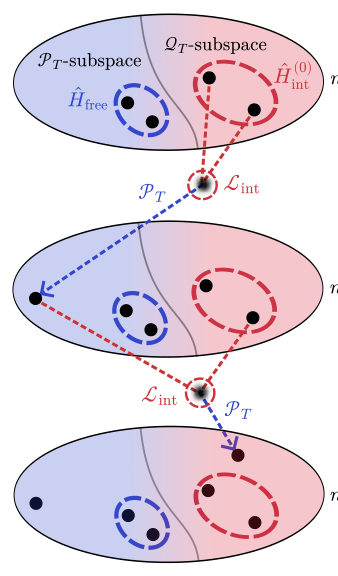
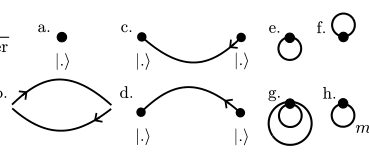
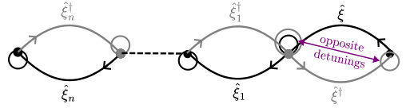
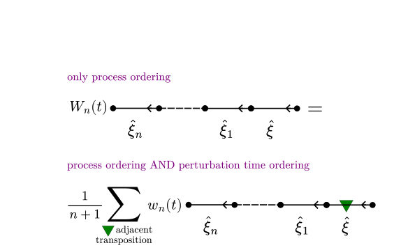
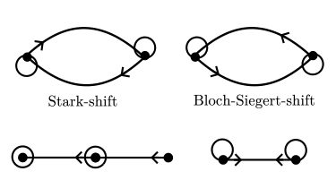
Summary. This paper introduces a new diagrammatic perturbation theory based on light-matter transition operators to derive effective Hamiltonians in the dispersive regime. It provides a systematic way to handle multi-photon processes and multi-qubit systems in both cavity and waveguide QED. The method is shown to be more computationally efficient than previous techniques for high-order expansions.
Why it may be interesting. It provides a powerful, systematic tool for researchers in quantum optics and circuit QED to analytically derive complex multi-photon interactions and energy shifts in multi-level systems without the computational explosion of standard state-centric approaches.
Main problem. The need for a systematic, higher-order perturbative framework to derive effective Hamiltonians in the dispersive regime of Cavity and Waveguide QED, specifically for multi-level/multi-qubit systems and continuous frequency spectra.
Main result. The development of a transition-centric diagrammatic perturbation theory (JLM diagrams) that provides a scalable 'toolbox' for constructing higher-order effective Hamiltonians and handles multi-photon processes more efficiently than existing methods.
Method. A transition-operator-based diagrammatic expansion using a resolvent method in Laplace space, combined with adiabatic elimination via controlled projections onto transition subspaces.
Model / system. Hybrid light-matter systems including Cavity QED (discrete modes) and Waveguide QED (continuous modes), involving N-level atoms or N-qubit systems interacting with quantized electromagnetic fields.
Key observables. Effective higher-order Hamiltonians, AC Stark shifts, effective qubit-quibit couplings, and multi-photon transition amplitudes.
Important parameters / regimes. Dispersive regime (large detunings), coupling strengths, frequency continua, and regularization parameters for handling divergences.
Assumptions / limitations. The Hamiltonian is assumed to be time-independent, and the expansion is primarily focused on the dispersive regime where coupling-to-detuning ratios are small.
Figures summary. Figure 1 shows the schematic of dispersive expansion and adiabatic elimination; Figure 2 presents the building blocks of JLM diagrams; Figure 3 illustrates 1st and 2nd-order JLM diagrams; Figures 13-16 show the mathematical proof of complexity bounds and a comparison of efficiency against James' method.
Paper structure. The paper introduces the JLM transition operator framework, establishes the diagrammatic rules and perturbative expansion, develops the adiabatic elimination procedure, provides a combinatorial analysis of diagram complexity, and concludes with a comparison of computational efficiency against traditional methods.
We propose an adiabatic-elimination formalism in the dispersive regime based on a transition-centric perturbation theory. The perturbative expansion is recast into a diagrammatic framework, while adiabatic elimination is implemented through controlled projections onto transition subspaces. Our approach applies systematically at arbitrary perturbation order, and is suited to multilevel systems and multiple qubits in both cavity and waveguide quantum electrodynamics. It ultimately enables the explicit construction of effective higher-order Hamiltonians while bypassing important limitations of existing techniques, thereby providing a practical toolbox for multiphoton processes in the dispersive regime.
Authors: Fang-Mei Yang, Jun-Hong An, Fu-Quan Dou
Type: theory · Category: quantum information and computing · PDF: https://arxiv.org/pdf/2605.14582v1
Analysis basis: full PDF text, analyzed in chunks
Topic relevance: 🔥 Tavis-Cummings & cavity-many-emitter 4/5 · Dicke superradiance 3/5 · non-equilibrium dynamics 3/5 · correlated / nonlocal dissipation 2/5 · correlated cavity matter 2/5 · driven-dissipative phase transition 2/5 · methods for driven-dissipative 2/5
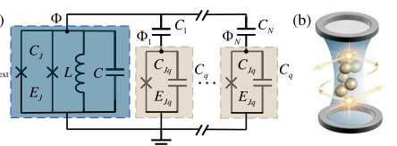
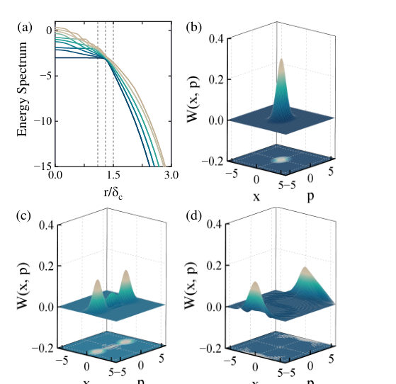
Summary. This paper proposes a method to optimize quantum batteries using two-photon parametric amplification in superconducting circuits. By using a squeezed cavity mode, the researchers show that charging power can be exponentially enhanced and the battery can be made more robust against environmental noise. This provides a scalable platform for high-power, stable quantum energy storage.
Why it may be interesting. It demonstrates how parametric control and squeezed light can be used to engineer light-matter interactions to achieve exponential gains in power and enhanced protection against decoherence in many-body quantum systems.
Main problem. Optimizing the performance of quantum batteries (QBs) by balancing the trade-off between high charging power and environmental decoherence/energy leakage.
Main result. Two-photon parametric driving exponentially enhances the effective cavity-qubit coupling, significantly increasing maximum charging power while providing stability against noise through squeezed cavity modes.
Method. The authors use a Lagrangian approach and unitary transformations (squeezing and rotating frames) to derive an effective generalized Dicke model, then solve the Lindblad master equation for open-system dynamics.
Model / system. A superconducting circuit system consisting of a two-photon-driven LC resonator (the charger) coupled to an array of transmon qubits (the battery), modeled via a generalized Dicke Hamiltonian.
Key observables. Stored energy (E), average charging power (P), maximum charging power (Pmax), steady-state energy, and Wigner functions.
Important parameters / regimes. Squeezing parameter (r), coupling strength (g), cavity/qubit detunings, dissipation rates (kappa, gamma), and number of qubits (N).
Assumptions / limitations. Transmon qubits are treated as two-level systems; the Lagrangian is truncated to the fourth order; the system is analyzed in the context of strong and ultrastrong coupling regimes.
Figures summary. Fig 1 shows the circuit schematic; Fig 2 displays energy spectra and Wigner functions; Fig 3 shows energy/power evolution and scaling in closed systems; Fig 4 shows energy/power evolution and scaling in open systems under dissipation.
Paper structure. The paper introduces the quantum battery problem, describes the superconducting circuit model and Hamiltonian derivation, analyzes the closed-system dynamics and scaling, investigates the open-system stability and dissipation effects, and concludes with the robustness of the scheme.
The parametric amplification enabled by two-photon driving constitutes a versatile platform for advanced quantum technologies. We present an optimized scheme for implementing quantum batteries (QBs) based on a superconducting circuit system, where a two-photon-driven LC resonator serves as the charger and an array of transmon qubits functions as the battery. Our results show that two-photon parametric driving exponentially enhances the effective cavity-qubit coupling, which in turn gives rise to near-degenerate energy-level structures and highly entangled quantum states. This significantly enhances the charging power and enables rapid energy transfer from the charger to the battery. Moreover, the engineered squeezed cavity mode and the associated quantum correlations effectively suppress environmentally induced decoherence, thereby delaying energy leakage and facilitating stable energy storage. The proposed scheme remains robust against practical experimental imperfections, such as parameter disorder and environmental noise, preserving its performance advantages. The work provides a feasible platform for realizing high-power, high-stability QBs and highlights the potential of parametric control in quantum energy technologies.
Authors: Federico Florio, Alfredo Braunstein
Type: theory · Category: numerical methods · PDF: https://arxiv.org/pdf/2605.14522v1
Analysis basis: full PDF text, analyzed in chunks
Topic relevance: 🔥 methods for driven-dissipative 4/5 · non-equilibrium dynamics 3/5 · Keldysh / 2PI / non-Gaussian methods 2/5 · driven-dissipative phase transition 2/5 · entanglement & information structure 2/5 · non-equilibrium universality 2/5
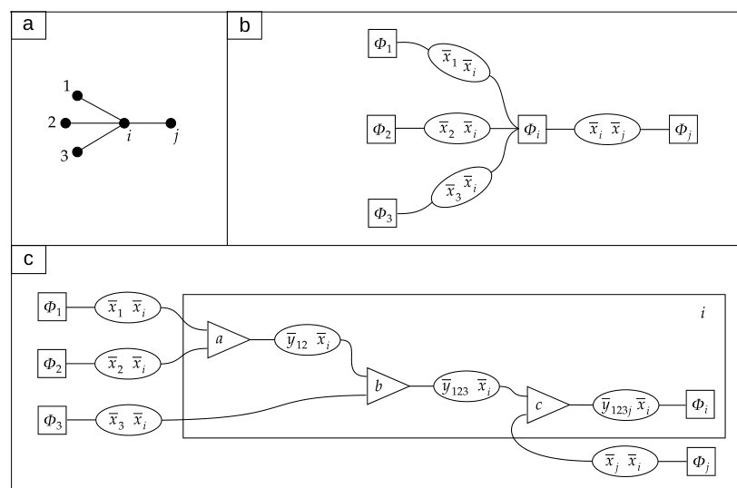
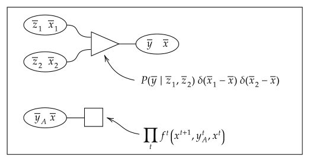
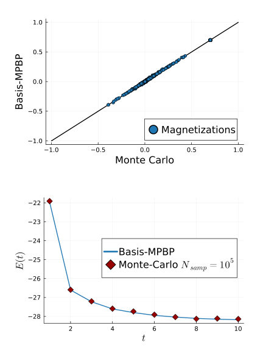
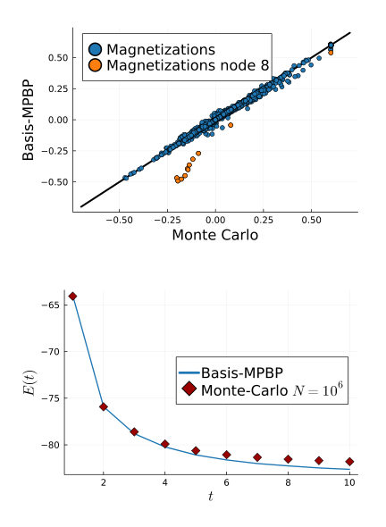
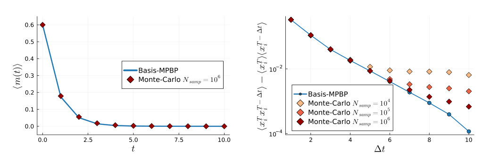
Summary. The authors introduce Basis-MPBP, a numerical method that extends Matrix-Product Belief Propagation to systems with continuous state variables. By using a function basis expansion and MPS-based truncation, the method efficiently computes complex dynamical observables and large deviations in large-scale disordered networks. It serves as a computationally efficient alternative to Monte-Carlo simulations for studying rare events in continuous-state stochastic processes.
Why it may be interesting. The method provides a powerful tensor-network-inspired tool for simulating the non-equilibrium dynamics of continuous-variable systems, which is highly relevant for studying open quantum systems and many-body dynamics in the presence of disorder.
Main problem. Extending the Matrix-Product Belief Propagation (MPBP) method to handle stochastic dynamics involving continuous or mixed continuous/discrete state-space variables.
Main result. The development of Basis-MPBP, a method that achieves linear computational complexity in network size and time horizon while providing a controlled approximation for continuous variables via basis expansion.
Method. A generalization of MPBP using a Matrix-Product State (MPS) ansatz combined with a tunable expansion in a Hilbert function basis (e.g., Fourier basis) and SVD-based truncation to manage bond dimension growth.
Model / system. Kinetic Ising dynamics on large sparse networks (including tree, random-regular, and Erdős-Rényi graphs) with real-valued random couplings.
Key observables. Marginal distributions, time auto-correlations, time evolution of energy and magnetization, and large deviation functions of magnetization.
Important parameters / regimes. Bond size (matrix dimension), basis size (number of expansion elements), time horizon, and network degree.
Assumptions / limitations. The method relies on the accuracy of the basis expansion and SVD truncation; it is exact on acyclic graphs only in the limit of infinite bond and basis size.
Figures summary. Figure 1 shows the redesign of a factor graph for high-degree nodes; Figures 5-7 display magnetization trajectories, autocorrelations, and the large deviation law on various graph topologies.
Paper structure. The paper introduces the problem of continuous-state dynamics, presents the Basis-MPBP formalism and its technical implementation via MPS and SVD, demonstrates its application to the Kinetic Ising model, and validates results against Monte-Carlo simulations and population dynamics.
Computation of observables in discrete stochastic, possibly conditioned, dynamics over large sparse networks is at the basis of a myriad of applications. The Matrix-Product Belief Propagation method allows a semi-analytical estimation of such observables with a controlled error that depends on the size of the employed matrices, called bond size. Its computational cost is linear in the time horizon and the network size for a large family of models with discrete degrees of freedom. Here, a generalization of this method to models with continuous or mixed continuous/discrete degrees of freedom is presented, using a tunable expansion in a Hilbert function basis. The computational cost of the method is linear in the network size with a prefactor that depends on the basis size and the bond size. The method's efficacy is demonstrated by employing a Fourier basis for a mixed continuous/discrete representation of the Kinetic Ising dynamics with real-valued random couplings, where intermediate ``local fields'' are treated as continuous. The accuracy of the method is verified via comparison with Monte-Carlo simulations. For this model, we calculate time auto-correlations, time evolution of energy and magnetization, and finally we estimate the large deviation function of the magnetization at a given future time.
Authors: Christophe Jurczak
Type: both · Category: quantum information and computing · PDF: https://arxiv.org/pdf/2605.14188v1
Analysis basis: full PDF text, analyzed in chunks
Topic relevance: 🔥 QC/QI experiment 4/5 · 🔥 Rydberg arrays 4/5 · analog quantum simulation 3/5 · entanglement & information structure 2/5 · exotic spin models in light-matter 2/5
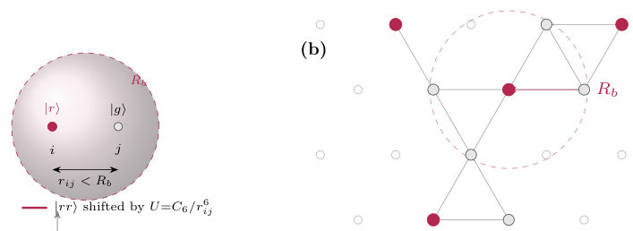
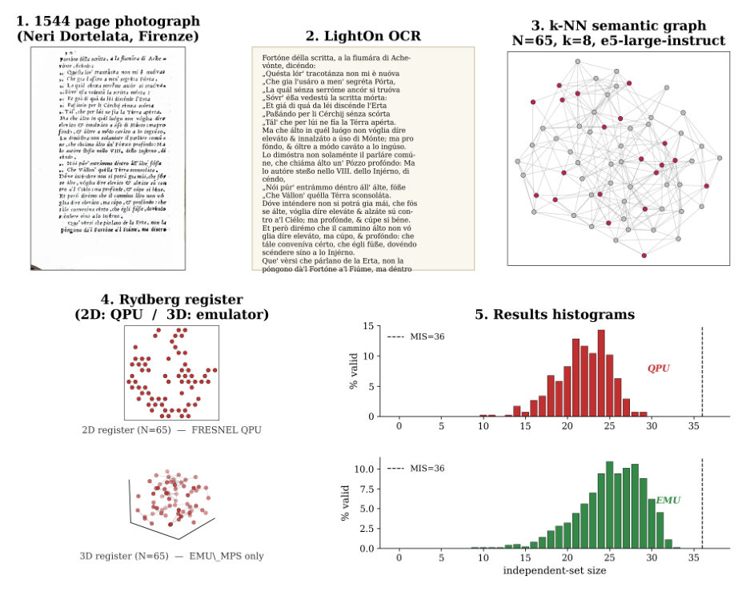
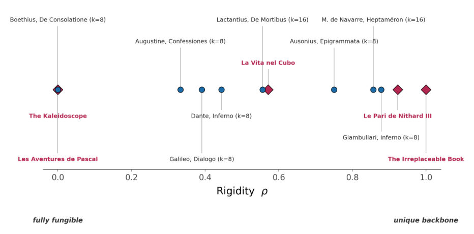
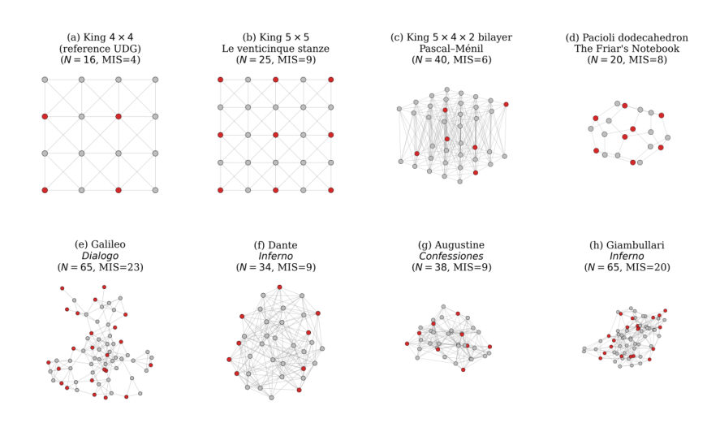
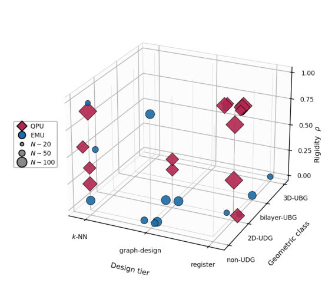
Summary. This paper presents a framework for mapping the semantic structure of books onto neutral-atom quantum processors using the Maximum Independent Set problem. By creating an engineered corpus called QOuLiPo, the authors provide a new benchmark for tracking the scaling of Rydberg-based quantum hardware. The work bridges quantum computing and digital humanities through a new metric called 'rigidity'.
Why it may be interesting. It demonstrates a novel application of Rydberg blockade-based computing to non-physical, semantic graphs, testing the limits of hardware-native optimization and register engineering.
Main problem. Exploring how a quantum computer perceives textual structure by mapping semantic graphs of books to physical atom registers to solve the Maximum Independent Set (MIS) problem.
Main result. The authors successfully used a neutral-atom processor to recover the structural backbone of both natural and engineered texts, introducing a 'rigidity' metric to quantify textual uniqueness.
Method. An end-to-end pipeline uses LLM-based OCR and embeddings to transform text into k-nearest neighbor graphs, which are then mapped to Rydberg atom arrays using pulse and register engineering.
Model / system. The physical platform is a neutral-atom quantum processor (Pasqal FRESNEL) utilizing the Rydberg blockade effect to implement the constraints of the MIS problem via the Rydberg Hamiltonian.
Key observables. Rigidity (rho), Backbone size (MIS/N), Approximation ratio, and Edge recall.
Important parameters / regimes. Number of atoms (N), blockade radius (Rb), k-nearest neighbor parameter (k), and cosine similarity threshold (t).
Assumptions / limitations. The primary information loss occurs during the 2D embedding of the semantic graph, and the structural conclusions are sensitive to the choice of embedding model.
Figures summary. Figure 1 shows the Rydberg blockade mechanism and mapping text to atoms; Figure 2 illustrates the end-to-end pipeline; Figure 3 plots the corpus rigidity; Figure 4 compares engineered vs. natural graphs; Figure 10 shows the impact of atom placement on the approximation ratio.
Paper structure. The paper introduces the concept of reading books via quantum hardware, describes the pipeline for graph construction and atom register design, presents the QOuLiPo engineered corpus, evaluates hardware performance on natural and engineered texts, and discusses the implications for the Digital Humanities.
What does a book look like to a quantum computer? This paper takes eight classical works of the Renaissance and its late-antique inheritance -- from Augustine to Galileo -- and runs each through a neutral-atom quantum processor. The bridge is graphs: each textual unit becomes an atom, and graph edges are physical blockade constraints for engineered exact unit-disk designs, or a 2D approximation to the semantic graph for natural texts. Three contributions follow. First, we introduce rigidity rho, a metric for how unique a book's structural backbone is -- distinguishing Marguerite de Navarre's Heptameron (rigid, twelve-nouvelle hard core) from Boethius (fully fungible, every chapter substitutable). Second, we invert the pipeline: rather than extracting a graph from existing prose, we pick a target graph the hardware encodes natively, and write a book whose structure matches it. The twenty-nine texts written this way, collected under the name QOuLiPo, extend the OuLiPo tradition to graph-topological constraints and, together with the eight natural texts, form a benchmark distribution against which neutral-atom hardware can be tracked as it scales. Third, we run both natural and engineered texts on Pasqal's FRESNEL processor up to one hundred atoms; engineered texts reach high approximation ratios, the cleanest instances returning the exact backbone. A cloud-accessible quantum machine plus an agentic coding environment now lets a single investigator run this pipeline end-to-end. What is reported is an application layer, not a speedup -- humanistic instances ready to load onto neutral-atom processors as they scale, already complementing classical text analysis. The Digital Humanities community has a stake in building familiarity with this hardware now: the engineered-corpus design choices made today fix the benchmark distribution future hardware will be measured against.
Authors: Prasad Koviri, Tomoya Okita, Rina Yabumoto, Yuta Fujihashi, Masahiro Yabuno, Hirotaka Terai, Shigehito Miki, Kali P. Nayak, Ryosuke Shimizu
Type: experiment · Category: quantum information and computing · PDF: https://arxiv.org/pdf/2605.14314v1
Analysis basis: full PDF text, analyzed in chunks
Topic relevance: 🔥 QC/QI experiment 4/5 · 🔥 interference shaping light 4/5 · 🔥 quantum optics experiment 4/5 · entanglement & information structure 2/5
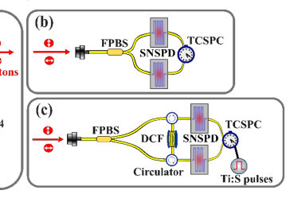
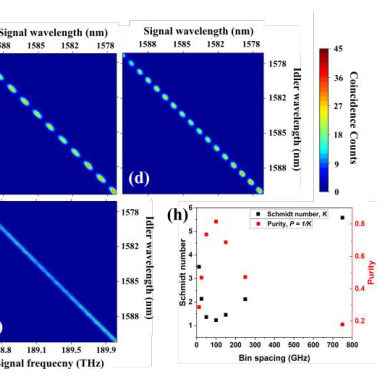
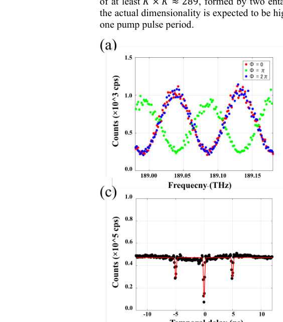
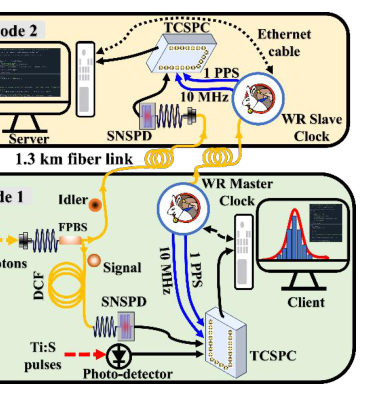
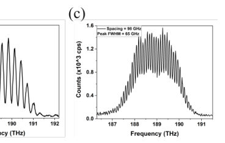
Summary. The researchers developed a method to synthesize high-dimensional frequency-bin qudits by manipulating the temporal structure of photon pairs in a bidirectional SPDC setup. They achieved precise control over frequency bin spacing and phase, demonstrating that these high-dimensional states can be reliably transmitted over a 1.3 km fiber network. This approach offers a versatile platform for scalable, wavelength-multiplexed quantum communication and sensing.
Why it may be interesting. This work is highly relevant to quantum optics and quantum networks as it provides a scalable, low-loss method for generating and controlling high-dimensional qudits using the frequency domain, which is compatible with existing WDM telecommunications infrastructure.
Main problem. The challenge of generating precisely controlled, high-dimensional frequency-bin qudits without the high optical losses or limited tunability associated with existing filtering or fixed-architecture platforms.
Main result. Demonstrated the engineering of high-dimensional frequency-entangled states with tunable bin spacing (12.5 GHz to 750 GHz) and phase, achieving a Hilbert-space dimensionality of at least 289 and proving robust distribution over a 1.3 km fiber network.
Method. Time-domain Fourier optical synthesis is used to manipulate the temporal structure of a biphoton wave packet via a nonlinear interferometer, effectively controlling the spectral modulation through Fourier duality.
Model / system. A bidirectional Spontaneous Parametric Down-Conversion (SPDC) source using a type-II PPMgSLT crystal, where a pump pulse passes through the crystal twice to create temporally separated wave packets.
Key observables. Joint Spectral Intensity (JSI), Schmidt decomposition (Schmidt number K), Hong-Ou-Mandel (HOM) interference visibility, and frequency-bin spacing.
Important parameters / regimes. Frequency bin spacing (12.5 GHz to 750 GHz), Hilbert space dimension (at least 289), fiber network length (1.3 km), and White Rabbit synchronization precision (28 ps).
Assumptions / limitations. Low-gain regime of SPDC, classical treatment of the pump field, and perfect spatial mode matching between the two crystal passes.
Figures summary. Fig 1 shows the generation and detection setup including the SPDC source and SNSPDs; Fig 3 illustrates spectral phase tuning via JSI and HOM interference patterns.
Paper structure. The paper introduces the problem of high-dimensional state generation, describes the experimental setup and the Fourier synthesis mechanism, presents the results of spectral engineering and dimensionality characterization, and concludes with a demonstration of state distribution over a campus-scale fiber network.
Frequency modes of light are one of the most promising platforms that provide access to high-dimensional quantum states amongst different photonic degrees of freedom capable of high-dimensionality, enabling robust, error-tolerant, and scalable quantum optical information systems. We demonstrate engineering of precisely controlled two-photon high-dimensional states entangled in frequency through time-domain Fourier optical synthesis. We generate and convert a continuous broadband frequency-entangled state into a large range of discrete frequency bins suitable for ITU standards, with spacings ranging from 12.5 GHz to 750 GHz, and observe spectral anticorrelations over 38 frequency bins, including intra-bin pure states at a 100 GHz bin spacing. We characterize the full quantum state dimensionality via Schmidt decomposition and observe lower bounds on the frequency-binned Hilbert-space dimensionalities of at least 289, formed by two entangled qudits with dimension 17. Furthermore, we demonstrate quantum nonlocality via frequency correlations in a transmission experiment over a campus-scale two-node fiber network. This work represents a crucial step towards building a versatile and relatively simple way of generating precisely controlled high-dimensional spectral qudits, with the potential of harnessing in wavelength-multiplexed quantum networks, high-dimensional information processing, and communication of quantum states specifically, and fiber-optic quantum remote sensing.
Authors: Patrycja Tulewicz, Karol Bartkiewicz, Franco Nori
Type: both · Category: quantum information and computing · PDF: https://arxiv.org/pdf/2605.14515v1
Analysis basis: full PDF text, analyzed in chunks
Topic relevance: 🔥 QC/QI experiment 4/5 · 🔥 entanglement & information structure 4/5 · quantum measurements 3/5 · exotic spin models in light-matter 2/5
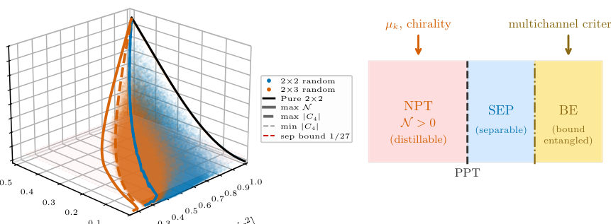
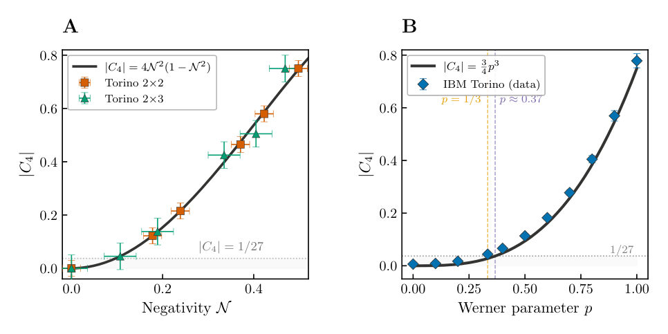
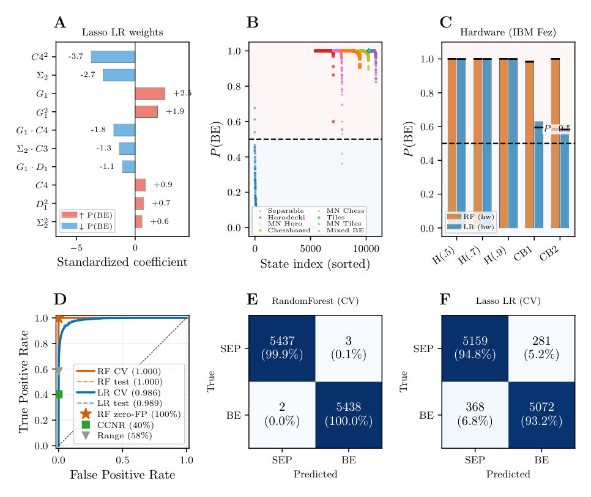
Summary. This paper introduces a method to detect undetectable bound entanglement by using spin chirality correlations across multiple copies of a quantum state. By combining these chirality features with spectral data in a machine learning classifier, the authors achieve near-perfect detection on real IBM quantum hardware.
Why it may be interesting. It bridges quantum information theory and condensed matter by showing that entanglement detection can be framed through the lens of spin chirality, a fundamental concept in chiral spin liquids.
Main problem. Detecting 'hidden' entanglement, specifically bound entanglement (PPT states) that is invisible to standard single-copy measurements and the CCNR criterion.
Main result. The authors prove that the difference between partial transpose and purity moments decomposes as a spin chirality-chirality correlator, and they develop a multi-channel machine learning classifier that achieves 99.9% recall for bound entanglement.
Method. The study uses controlled-SWAP circuits and randomized measurements to extract higher-order moments, combined with a Random Forest and Lasso logistic regression classifier trained on spectral and chirality features.
Model / system. Bipartite quantum systems in 2x2 (qubit-qubit), 2x3 (qubit-qutrit), and 3x3 (qutrit-qutrit) dimensions, implemented on IBM Heron-architecture superconducting processors (IBM Kingston, Torino, and Fez).
Key observables. Negativity, partial transpose moments, scalar spin chirality (C3, C4), realignment matrix singular values (Sigma), and the non-Hermiticity gap (D).
Important parameters / regimes. PPT (Positive Partial Transpose) vs NPT (Non-Positive Partial Transpose) regimes, CCNR-invisible bound entanglement, and noise levels (depolarizing noise).
Assumptions / limitations. The use of maximum likelihood estimation (MLE) to account for hardware degradation and the assumption that the trained classifier generalizes to unseen bound entangled families.
Figures summary. Figure 1 shows the chirality landscape (purity vs. negativity vs. C4); Figure 3 illustrates the machine learning pipeline, including Lasso coefficients and Random Forest feature importance.
Paper structure. The paper introduces the problem of hidden entanglement, provides a theoretical proof relating moments to spin chirality, describes the development of a multi-channel ML classifier, presents experimental validation on IBM hardware, and discusses noise robustness and efficiency.
Entanglement can hide in two fundamentally different ways. First, multi-copy correlations can carry information that no single-copy measurement on an unknown state is able to access. Second, bound entangled states possess a positive partial transpose, which makes them invisible to the Peres-Horodecki criterion and all moment inequalities that depend on it. Here we show that the moment difference between the partial transpose and purity decomposes exactly as a chirality-chirality correlator, where the relevant operator is the scalar spin chirality -- the same quantity that governs chiral spin liquids and the topological Hall effect. This decomposition identifies the specific physical structure that multi-copy entanglement detection probes. Using the same controlled-SWAP circuits, we develop a multi-channel spectral classifier for bound entanglement. The classifier combines realignment spectral features with chirality corrections and achieves 99.9% recall at zero false positives across all three known 3x3 bound entangled families, compared with ~40% for the CCNR criterion alone. We also introduce a marginal-noise construction that produces CCNR-invisible bound entangled states, which the classifier detects but which remain invisible to all single-parameter criteria. We validate our approach experimentally on three IBM Quantum processors and demonstrate negativity reconstruction with mean errors of 0.002-0.027, chirality detection for pure and mixed entangled states, and bound entanglement detection across two structurally distinct families (Horodecki and chessboard) on a single gate-based superconducting processor.
Authors: Johannes Mögerle, Frederic Hummel, Alicia Keil, Tangi Legrand, Eduard J. Braun, Henri Menke, Jonathan King, Beatriz Olmos, Sebastian Hofferberth, Hans Peter Büchler, Sebastian Weber
Type: theory · Category: other · PDF: https://arxiv.org/pdf/2605.14993v1
Analysis basis: full PDF text, analyzed in chunks
Topic relevance: 🔥 Rydberg arrays 4/5 · Tavis-Cummings & cavity-many-emitter 2/5 · analog quantum simulation 2/5 · correlated cavity matter 2/5 · exotic spin models in light-matter 2/5
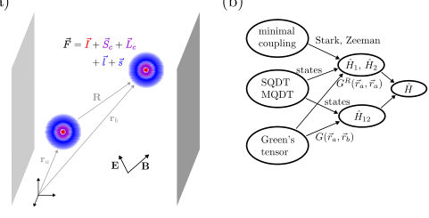
Summary. This paper introduces an updated version of the PairInteraction software, which uses MQDT and Green's tensors to accurately model Rydberg atom interactions. The new version is significantly faster and can handle complex divalent atoms and atoms near surfaces. It is a vital resource for designing and interpreting experiments in Rydberg-based quantum technologies.
Why it may be interesting. It provides a highly efficient, scalable tool for researchers designing Rydberg-based quantum architectures, specifically addressing the complex physics of divalent atoms and the modification of interactions by nearby surfaces/nanostructures.
Main problem. The need for an accurate, efficient, and scalable computational framework to model the complex single-atom properties and mutual interactions of Rydberg atoms, particularly divalent species and atoms in structured electromagnetic environments.
Main result. The development of PairInteraction v2, an open-source software that achieves a tenfold speedup in pair-potential calculations and provides a unified framework for modeling atoms near surfaces using MQDT and Green's tensors.
Method. A unified theoretical approach combining Multi-Channel Quantum Defect Theory (MQDT) for atomic states and static electromagnetic Green's tensors for interactions, implemented via a modular C++/Python architecture.
Model / system. The system involves one or two Rydberg atoms (alkali or divalent species like Sr and Yb) in free space or near structured environments like cavities or conducting plates, described by a Hamiltonian including external electric/magnetic fields and dipole-dipable interactions.
Key observables. Stark maps, Zeeman maps, pair-potential curves, van der Waals coefficients, Casimir-Polder shifts, and effective spin Hamiltonians.
Important parameters / regimes. Effective principal quantum number (nu), angular quantum numbers (l, j, L, J, F), interatomic distance, and atom-surface distance in the static limit.
Assumptions / limitations. The interaction model assumes the static limit (distances much smaller than relevant wavelengths) and neglects exchange interactions at distances larger than the LeRoy radius.
Figures summary. Figure 1 shows the physical setup and Hamiltonian construction; Figure 2 illustrates MQDT concepts and channel coupling; Figure 3 shows state labeling via quantum number variance; Figure 5 benchmarks software performance; Figure 6 compares calculated and experimental Yb Stark maps; Figure 7 shows pair-interaction potentials.
Paper structure. The paper introduces the scientific problem, presents the theoretical framework (MQDT and Green's tensors), details the software implementation and performance gains of PairInteraction v2, validates the model against experimental Yb data, and discusses applications to surface interactions and effective spin models.
Rydberg atoms provide a powerful platform for exploring strongly interacting quantum systems, both in free space and in structured electromagnetic environments, with growing applications in quantum technology. Accurately modeling their single-atom properties and mutual interactions is essential for interpreting experiments and designing new architectures. We present a unified theoretical framework for Rydberg atoms and their interactions based on multi-channel quantum defect theory (MQDT) and static electromagnetic Green's tensors. MQDT provides a precise description of Rydberg states of divalent atoms such as strontium and ytterbium, while the Green's tensor formalism provides a general and flexible approach for calculating interactions between two Rydberg atoms in arbitrary geometries, including modifications induced by nearby surfaces. We implement this framework in an updated version of the open-source PairInteraction software [Weber et al., J.~Phys.~B~50 (2017)]. The implementation leverages high-performance libraries and achieves speedups of one order of magnitude for pair-potential calculations compared to prior software. We demonstrate the capabilities of the framework through example applications to divalent atoms and show excellent agreement with experimental data for an exemplary Stark map of $^{174}$Yb. The modular software architecture enables the community to extend it further.
Authors: Leonardo A. Lessa, Tsung-Cheng Lu
Type: theory · Category: statistical mechanics · PDF: https://arxiv.org/pdf/2605.15201v1
Analysis basis: full PDF text, analyzed in chunks
Topic relevance: 🔥 entanglement & information structure 4/5 · correlated / nonlocal dissipation 2/5 · driven-dissipative phase transition 2/5 · methods for driven-dissipative 2/5 · non-equilibrium dynamics 2/5
Summary. The paper identifies a new way for mixed-state systems to exhibit long-range entanglement through a mismatch in the dimensions of symmetric subspaces. It demonstrates that the maximally mixed translation-invariant state possesses long-range bipartite entanglement and unique correlation properties. This mechanism is unique to mixed states and does not require traditional symmetry anomalies or long-range correlations.
Why it may be interesting. This paper introduces a novel, intrinsic mechanism for long-range entanglement in mixed states that is fundamentally different from known pure-state mechanisms, which is highly relevant for understanding the entanglement structure of steady states in open quantum systems.
Main problem. Identifying a new mechanism for long-range entanglement (LRE) in many-body mixed states that does not rely on symmetry anomalies or long-range correlations.
Main result. The authors discover that LRE can arise from a 'dimensional mismatch' between the exponentially growing rank of a translation-invariant mixed state and the polynomially growing dimension of the space spanned by short-range entangled states.
Method. The study uses dimensional counting, group theory (Schur-Weyl duality), and matrix product state (MPS) formalism to compare subspace dimensions, alongside information-theoretic measures like entanglement of formation and conditional mutual information.
Model / system. A 1D ring of L qudits (dimension d) with periodic boundary conditions, specifically focusing on the Maximally Mixed Invariant State (MMIS) within the translation-invariant subspace.
Key observables. Entanglement of formation, conditional mutual information, Rényi-index-dependent operator-space entanglement, and variance-normalized Rényi-2 correlators.
Important parameters / regimes. System size L, local dimension d, and the thermodynamic limit (L to infinity).
Assumptions / limitations. The analysis often assumes L is a prime number to utilize the ergodicity of the p-shift; it also assumes the subregion size |A| is a finite fraction of L.
Figures summary. Figure 1 visualizes the MMIS; Figure 2 shows the fidelity of the state approaching the steady state; Figures 4-6 illustrate the reduction of traces and permutations of indices in the subregion; Figure 7 shows the doubled Hilbert space representation.
Paper structure. The paper introduces the problem of LRE in mixed states, presents the dimensional mismatch proof, analyzes the entanglement and correlation properties of the MMIS, explores the permutationally symmetric subspace, investigates operator space entanglement, and concludes with the emergence of the state via a Lindbladian.
We present a new mechanism for long-range entanglement (LRE) in strongly symmetric many-body mixed states that does not rely on symmetry anomalies or long-range correlations. Our primary example is the maximally mixed state in the translation-invariant subspace on a one-dimensional ring. This state is LRE because translationally symmetric short-range entangled states span a subspace whose dimension grows only polynomially with system size, whereas the full translation-invariant subspace grows exponentially. We further discuss certain unconventional properties of this state, including logarithmically growing conditional mutual information, strong-to-weak spontaneous symmetry-breaking, and Rényi-index-dependent operator-space entanglement. We also construct a geometrically non-local Lindbladian to stabilize this state as the steady state. Our results identify dimensional mismatch as a novel route to LRE that is intrinsic to many-body mixed states.
Authors: Chengdong Yang, Hanwen Guo, Yu-Yang An, Qian He, Chi Lu, Ziheng Jiang, Yan-Qing Lu, Shining Zhu, Xiao-Song Ma
Type: experiment · Category: quantum information and computing · PDF: https://arxiv.org/pdf/2605.14777v1
Analysis basis: full PDF text, analyzed in chunks
Topic relevance: 🔥 QC/QI experiment 4/5 · 🔥 quantum optics experiment 4/5 · entanglement & information structure 2/5 · interference shaping light 2/5
Summary. This paper presents a programmable quantum memory using erbium-doped thin-film lithium niobate that integrates efficient photon storage with high-speed electro-optic control. By leveraging the Pockels effect, the device can rapidly route telecom-wavelength photons, enabling the development of scalable, spectrally multiplexed quantum networks.
Why it may be interesting. This work is highly relevant for quantum optics and open quantum systems as it demonstrates a scalable, integrated platform for controlling light-matter interactions and managing quantum correlations in a multiplexed network.
Main problem. The need for integrated, high-efficiency, and programmable quantum memories at telecom wavelengths that can support spectrally multiplexed quantum networks.
Main result. Demonstration of a cavity-enhanced quantum memory in erbium-doped thin-film lithium niobate that achieves 23.3% storage efficiency and enables high-speed (20 MHz) frequency-selective routing of entangled photons.
Method. The researchers used the Atomic Frequency Comb (AFC) protocol in an isotopically purified 167Er3+-doped thin-film lithium niobate microring resonator, utilizing the electro-optic effect for fast frequency control and verifying entanglement via a Franson interferometer.
Model / system. An isotopically purified 167Er3+-doped thin-film lithium niobate (TFLN) microring resonator operating at cryogenic temperatures (260 mK) and high magnetic fields (1.855 T).
Key observables. Storage efficiency, AFC lifetime, inter-channel crosstalk, optical coherence time (T2), entanglement witness (W), and second-order cross-correlation function g2(0).
Important parameters / regimes. Wavelength ~1532 nm, storage efficiency of 23.3%, AFC lifetime of 277.6 s, electro-optic tuning efficiency of 1.11 GHz/V, and modulation rates up to 20 MHz.
Figures summary. Figure 1 shows the device layout, SEM, and optical characterization; Figure 3 illustrates high-speed routing pulse sequences and frequency-selective histograms; Figure 4 details the entanglement storage setup and verification results.
Paper structure. The paper introduces the device architecture and material properties, describes the spectral preparation and cavity characterization, demonstrates high-speed electro-optic routing, and concludes with the storage and retrieval of time-energy-entangled photons.
Spectrally multiplexed telecom quantum networks require quantum memories that combine efficient storage with programmable frequency addressing. An ideal integrated implementation should therefore unite a native telecom transition, efficient storage and fast on-chip spectral control. Here we demonstrate a cavity-enhanced quantum memory in an isotopically purified $^{167}\mathrm{Er}^{3+}$-doped thin-film lithium niobate microring resonator. Long-lived hyperfine shelving states support persistent, high-contrast atomic frequency comb preparation, with a single-component comb lifetime of $277.6 \pm 52.6$s. Together with cavity impedance matching, this yields an on-chip storage efficiency of $23.3 \pm 0.5\%$ for 100-ns storage. The intrinsic electro-optic response of lithium niobate enables frequency-selective storage and routing of retrieved photons at rates up to 20~MHz with inter-channel crosstalk below $10^{-4}$. We further store and retrieve time-energy-entangled telecom photons, violating an entanglement-witness bound by more than 11 standard deviations and thus verifying the quantum nature of the storage process. Our results establish erbium-doped thin-film lithium niobate as a programmable light--matter interface for spectrally multiplexed quantum networks.
Authors: G. Sarantoglou, N. Tzekas, G. Moustakas, G. A. Karydis, V. Kaminski, E. Protsenko, K. Gradkowski, A. Bazin, C. Vigliar, A. Bogris, C. Mesaritakis
Type: both · Category: quantum information and computing · PDF: https://arxiv.org/pdf/2605.14959v1
Analysis basis: full PDF text, analyzed in chunks
Topic relevance: 🔥 QC/QI experiment 4/5 · 🔥 quantum optics experiment 4/5 · interference shaping light 2/5 · quantum measurements 2/5
Summary. This paper demonstrates a silicon nitride photonic integrated circuit that functions as a quantum-secure Physical Unclonable Function. By leveraging fabrication-induced phase variations and single-photon states, the system provides a highly secure method for hardware authentication that is resistant to cloning and eavesdropping.
Why it may be interesting. It integrates quantum optical principles, such as the no-cloning theorem and the use of maximally mixed states, with integrated photonics to create a hardware-based security primitive.
Main problem. Developing a quantum-secure Physical Unclonable Function (PUF) using silicon photonics that is resistant to side-channel, cloning, and man-in-the-middle attacks.
Main result. Demonstrated a silicon nitride (SiN) photonic mesh acting as a PUF with extremely low error rates (EER as low as 10^-14) and validated a quantum readout protocol that protects the device fingerprint using single-photon states.
Method. The researchers used experimental extraction of fabrication-induced phase offsets in a SiN MZI mesh and combined this with a quantum protocol using single-photon states and maximally mixed states, validated via Monte Carlo simulations.
Model / system. A 6x6 rectangular silicon nitride (SiN) programmable photonic Mach-Zehnder Interferometer (MZI) mesh consisting of 15 balanced MZIs and 13 external phase shifters, where security arises from uncontrollable waveguide variations.
Key observables. False Acceptance Rate (FAR), False Rejection Rate (FRR), Equal Error Rate (EER), inter-Hamming distance, and intra-Hamming distance.
Important parameters / regimes. Number of detected clicks (N_clicks), error correction threshold (N_B), total propagation loss (~11 dB), and single-photon detector efficiency (25%).
Assumptions / limitations. The security assumes the no-cloning theorem applies to the readout and that the adversary's view of the input is a maximally mixed state due to random input port driving.
Figures summary. Fig 1 shows the MZI mesh schematic; Fig 2 displays MZI power output and the distribution of nullification voltages; Fig 3 shows Gaussian probability density functions for Hamming distances; Fig 5 illustrates FAR and FRR trends.
Paper structure. The paper introduces the vulnerability of classical PUFs, describes the SiN photonic platform and its fabrication-induced fingerprint, details the quantum readout protocol and security analysis against various attacks, and concludes with statistical validation of error rates.
Physical Unclonable Functions (PUFs) are hardware security primitives whose inherent physical complexity can be exploited for secure authentication and cryptographic key generation. Silicon photonic devices, owing to their suitability for quantum and artificial intelligence applications alongside standard CMOS fabrication processes, constitute a highly promising substrate for integrated multifunctional PUFs. Despite the advanced security guarantees offered by quantum cryptographic protocols and the central role of silicon photonics in quantum technologies, quantum readout strategies based on single-photon states for photonic PUFs remain largely unexplored. In this work, we experimentally demonstrate a silicon nitride (SiN) programmable photonic Mach Zehnder interferometer mesh that implements a unitary transformation and operates as a PUF, whose secret physical signature arises from uncontrollable waveguide variations during fabrication. Using experimentally derived parameters from the SiN integrated mesh, we further introduce and numerically evaluate a quantum readout protocol that combines single-photon states with PUFs. Maximally mixed quantum states are employed to conceal the underlying unitary transformation from passive eavesdropping. Security against adversaries possessing devices fabricated under similar conditions is assessed, with authentication performance quantified through Monte Carlo analysis of the false acceptance and false rejection rates as a function of the number of detected events and corrected errors. The results indicate exceptional performance with equal error rates as low as 10 to the minus 14, highlighting the potential of quantum secure PUFs for high security authentication applications.
Authors: Zhixuan Zhao, Tao Zhong, Yixun Hu, Nathalie P. de Leon, Christine Allen-Blanchette
Type: both · Category: disordered systems and neural networks · PDF: https://arxiv.org/pdf/2605.13988v1
Analysis basis: full PDF text, analyzed in chunks
Topic relevance: 🔥 spintronics-quantum-optics interface 4/5 · QC/QI experiment 3/5 · methods for driven-dissipative 2/5 · quantum measurements 2/5
Summary. This paper introduces NeTMY, a neural field-based method for reconstructing spin densities from NV-center magnetic noise spectra. It identifies a specific optimization failure mode called 'center-collapse' caused by physically accurate dipolar operators and shows how a coordinate-based neural network can mitigate this by acting as a structured filter. The method outperforms both classical regularized solvers and supervised deep learning models in both synthetic and real-world experimental settings.
Why it may be interesting. It provides a sophisticated example of using machine learning (neural fields) to solve highly non-linear, physically-constrained inverse problems in quantum sensing, specifically addressing how the choice of physical operator affects the optimization geometry.
Main problem. The paper addresses the ill-posed inverse problem of reconstructing spatial spin-source density and Larmor frequency from noisy NV-center magnetic noise spectra, specifically overcoming the 'center-collapse' optimization failure in traditional solvers.
Main result. The proposed NeTMY method achieves superior localization and distributional accuracy compared to classical and supervised baselines, demonstrating that neural field parameterization acts as a beneficial structural filter that mitigates pathological gradient updates.
Method. NeTMY uses an amortization-free, coordinate-based neural field (MLP) with annealed Fourier positional encoding, multiscale optimization, and a physics-informed architecture including density gating and energy-anchored scale correction.
Model / system. The system involves Nitrogen-Vacancy (NV) center arrays in diamond used for nanoscale magnetic noise sensing, modeled via a dipolar forward operator that maps spin-source density to frequency-dependent magnetic noise spectra.
Key observables. Frequency-dependent noise spectrum, spin-source density, Larmor frequency, and localization metrics (GMSD, Hungarian F1, Sliced Wasserstein distance).
Important parameters / regimes. Standoff height (z0), Larmor frequency (omega_L), linewidth (gamma), and the distinction between scalar (F1) and tensor (F2) forward operators.
Assumptions / limitations. The analysis focuses on the fluctuation-dominated dipolar regime and assumes the tensor operator is exact for locally constant Larmor frequencies.
Figures summary. Figures illustrate the NV-center sensing task, the NeTMY architecture, the impact of operator fidelity on optimization landscapes, the superiority of NeTMY in cross-fidelity benchmarks, and specific failure modes like axis-aligned artifacts and high-frequency leakage.
Paper structure. The paper introduces the inverse sensing problem, analyzes the physical forward models (F1 vs F2), identifies the 'center-collapse' pathology, presents the NeTMY architecture and optimization strategy, evaluates performance via cross-fidelity and matched-operator benchmarks, validates with real-world alpha-RuCl3 data, and discusses limitations and failure modes.
Inverse problems in scientific sensing are often solved with either hand-designed regularizers or supervised networks trained on simulated labels, yet both can fail when the forward model is nonlinear, spectrally coupled, and physically delicate. We study this issue for noise sensing based on nitrogen-vacancy (NV) centers in diamond, where a quantum sensor measures magnetic-noise spectra generated by sparse spin sources. We show that replacing a common scalar/coherent forward approximation with a tensor power-summed dipolar operator changes the inverse landscape and exposes a center-collapse failure mode in free-density optimization. We propose NeTMY, an amortization-free coordinate neural field coupled to the differentiable NV forward model, with annealed positional encoding, multiscale optimization, sparsity/gating, and spectrum-fidelity losses. Across sparse synthetic reconstructions generated by the corrected operator, NeTMY achieves the best localization and distributional metrics in the tested benchmark. Mechanism experiments show that NeTMY does not directly execute the raw density-space gradient; its parameterization smooths and redistributes updates, mitigating the center-collapse pathology. These results position NV quantum sensing as a useful testbed for physics-faithful neural inverse problems.
Authors: B. Göblyös, S. Kollarics, R. Kucsera, D. Plitt, K. Koltai, B. G. Márkus, L. Forró, F. Simon
Type: experiment · Category: quantum information and computing · PDF: https://arxiv.org/pdf/2605.14697v1
Analysis basis: full PDF text, analyzed in chunks
Topic relevance: 🔥 QC/QI experiment 4/5 · 🔥 spintronics-quantum-optics interface 4/5 · quantum optics experiment 3/5
Summary. This paper demonstrates that spin information in diamond NV centers can be read out via infrared singlet transitions near 1042 nm. By showing that this emission is sensitive to magnetic fields in the same way as visible fluorescence, the authors establish a direct, conversion-free interface for quantum communication using standard telecom wavelengths.
Why it may be interesting. This work is highly relevant to quantum optics and quantum networks as it proposes a hardware-agnostic method to integrate solid-state spin qubits with existing fiber-optic telecommunications infrastructure without active frequency conversion.
Main problem. The difficulty of interfacing diamond-based NV center spin-qubits with telecommunication infrastructure due to the need for lossy, complex frequency conversion from visible to infrared wavelengths.
Main result. The researchers demonstrated that spin-state information is faithfully transcribed to the infrared singlet emission (near 1042 nm), providing a direct, conversion-free readout channel compatible with telecom bands.
Method. Wavelength-resolved optically detected magnetic resonance (ODMR) spectroscopy using a 532 nm laser, microwave irradiation, and a spectrometer capable of detecting NIR emission up to 2000 nm.
Model / system. Negatively charged nitrogen-vacancy (NV-) centers in diamond, described by a ground-state spin Hamiltonian including axial and transverse zero-field splitting.
Key observables. ODMR contrast in the 1042 nm emission, NIR photoluminescence intensity, and wavelength-resolved ODMR maps as a function of magnetic field.
Important parameters / regimes. Zero-field splitting D = 2872.3 MHz, transverse splitting E = 7.44 MHz, and the 1042 nm singlet-singlet transition wavelength.
Assumptions / limitations. The identification of the NIR signal relies on the assumption that the spin-dependent intersystem crossing (ISC) mechanism is the primary driver of population redistribution.
Figures summary. Figure 1 shows the NV center structure, Jablonski diagram, and NIR emission spectra; Figure 2 displays wavelength-resolved ODMR spectra and the 1042 nm transition; Figure 3 presents ODMR intensity maps at 680 nm and 1310 nm compared with Hamiltonian eigenvalues.
Paper structure. The paper introduces the interface problem, describes the NV center electronic structure and the proposed NIR readout mechanism, details the experimental spectrometer setup, presents the wavelength-resolved ODMR results and spin-state transcription evidence, and concludes with the implications for quantum networking.
Nitrogen-vacancy (NV) centers in diamond are a leading platform for solid-state quantum sensing and quantum information processing. While most optical studies rely on the visible fluorescence associated with the triplet transitions, the infrared singlet transition near $1042$ nm, which is typically considered dark within the singlet manifold of the NV optical cycle, provides an alternative optical channel. Here, we report wavelength-resolved optically detected magnetic resonance (ODMR) measurements of this infrared emission. We directly observe ODMR contrast in the $1042$ nm emission and analyze its dependence on the magnetic field. The field-dependent spectral dispersion of the ODMR signal demonstrates that the spin-state information encoded in the NV center is transcribed to the infrared singlet emission through the spin-selective intersystem crossing, in close analogy to the visible fluorescence readout. These results establish infrared ODMR as a high-fidelity optical readout pathway. Crucially, by extending spin-state transcription directly into the $1300-1600$ nm range, this work demonstrates a direct, conversion-free interface between diamond spin-qubits and standard telecommunication infrastructure, bypassing the efficiency bottlenecks of active frequency conversion and benefiting from the already well-developed technologies in this range of the electromagnetic spectrum.
Authors: Tommy Chin, Sarah Shandera
Type: theory · Category: quantum information and computing · PDF: https://arxiv.org/pdf/2605.15036v1
Analysis basis: full PDF text, analyzed in chunks
Topic relevance: 🔥 entanglement & information structure 4/5 · methods for driven-dissipative 2/5 · non-equilibrium dynamics 2/5 · quantum measurements 2/5
Summary. This paper develops an analytical framework to study the dynamics of subsystems within a larger N-qubit network. It reveals that the direction of excitation flow uniquely determines the positivity and complete positivity of the dynamical maps and links these properties to the sensitivity of the system for parameter estimation via Quantum Fisher Information.
Why it may be interesting. It provides a unified framework for understanding how local observations of non-Markovian dynamics (including non-CP maps) can be used to infer global properties like coupling strength and network size.
Main problem. Investigating what an observer can infer about a closed N-qubit network by observing its correlated open subsystems, specifically addressing non-Markovian and non-completely positive dynamics.
Main result. The authors show that a single transition amplitude controls excitation flow, positivity, complete positivity, entanglement entropy, and quantum Fisher information; they also find that positivity and complete positivity coincide and are determined solely by the direction of excitation flow.
Method. Analytical derivation of closed-form propagators using an operator-sum representation and a decomposition of Quantum Fisher Information into state, process, and cross contributions.
Model / system. A closed N-qubit network with a single conserved excitation governed by a homogeneous all-to-all XXZ Hamiltonian.
Key observables. Excitation flow, positivity and complete positivity (CP), entanglement entropy, and Quantum Fisher Information (QFI) for global parameters J and N.
Important parameters / regimes. Total number of qubits N, subsystem size K, coupling strength J, and the transition amplitude u_d(t).
Assumptions / limitations. The system is restricted to the single-excitation sector (charge q=1) and the global dynamics are unitary.
Figures summary. Figure 4 illustrates the action of dynamical maps on the Bloch ball and trajectories of physical states; Figure 5 shows the domain of positivity for different time intervals; Figure 9 demonstrates the decomposition of Fisher information into state, process, and cross contributions.
Paper structure. The paper introduces the problem of subsystem observation, defines the N-qubit XXZ model, derives closed-form propagators, analyzes the conditions for positivity and CP, characterizes entanglement and excitation flow, and concludes with a detailed decomposition and analysis of Quantum Fisher Information.
We derive closed-form propagators for any $K$-qubit subsystem of a closed $N$-qubit network with a single conserved excitation. A single transition amplitude simultaneously controls excitation flow between subsystems, the positivity and complete positivity of every propagator, the entanglement entropy of every subsystem, and the quantum Fisher information for global parameters. Positivity and complete positivity coincide, determined solely by the direction of excitation flow, independently of subsystem size, coherence, or entanglement structure. A propagator is positive and completely positive if and only if it contracts the subsystem state toward its fixed point. The ensemble of propagators collectively constrains global properties inaccessible to any single subsystem. For single-qubit subsystems, we characterize the ensemble's fixed-point distribution and domain of positivity, finding a band of states that lies inside the positivity domain of every propagator yet is never visited by the physical dynamics. The quantum Fisher information decomposes into state and process contributions over any observation window $[t_1,t_2]$, with the state contribution bounded while the process contribution grows secularly. The total Fisher information is minimal when all future propagators are nonpositive and not completely positive, and near its maximum when they are positive and completely positive.
Authors: Ilya A. Stepanov, Oksana I. Shmonina, Evgeniy V. Sergeev, Aleksandr S. Baburin, Danila Yu. Ulyanov, Kirill A. Buzaverov, Sergey S. Avdeev, Aleksey B. Kramarenko, Yuri V. Panfilov, Ilya A. Rodionov
Type: both · Category: quantum information and computing · PDF: https://arxiv.org/pdf/2605.14829v1
Analysis basis: full PDF text, analyzed in chunks
Topic relevance: 🔥 QC/QI experiment 4/5 · 🔥 quantum optics experiment 4/5 · quantum measurements 2/5
Summary. This review examines the development of integrated superconducting nanowire single-photon detectors (iSNSPDs) for use in photonic integrated circuits. It covers the transition from fundamental physical models to advanced material engineering and integration strategies. The paper highlights how these detectors are essential for the scalability of quantum communication and computing.
Why it may be interesting. This is highly relevant for quantum optics and quantum information researchers as it details the hardware advancements necessary for scalable photonic quantum networks and high-fidelity photon-number-resolving measurements.
Main problem. The challenge of integrating high-performance single-photon detectors with photonic integrated circuits (PICs) to enable scalable quantum technologies like communication, computing, and sensing.
Main result. The review provides a comprehensive overview of the progress in integrated superconducting nanowire single-photon detectors (iSNSPDs), highlighting the superiority of NbN and NbTiN for high-speed/high-efficiency applications and the potential of amorphous materials for mid-IR detection.
Method. A comprehensive review of literature covering fundamental physical models (hotspot, vortex, and VAP), material engineering strategies (ion irradiation, material selection), and integration architectures (waveguide-coupled, W-shaped nanowires).
Model / system. The physical system consists of integrated superconducting nanowire single-photon detectors (iSNSPDs) embedded in photonic platforms such as silicon nitride or lithium niobate waveguides. Physical models include the hotspot model, the vortex model, and the vortex-antivortex pair (VAP) unbinding model.
Key observables. System detection efficiency (SDE), intrinsic detection efficiency (IDE), dark count rate (DCR), timing jitter, recovery time, and photon-number resolution (PNR).
Important parameters / regimes. Nanowire geometry (width, thickness, length), superconducting transition temperature (Tc), critical current (Ic), bias current (Ib), and photon wavelength (from visible to mid-IR).
Assumptions / limitations. The review notes that no single universal model currently explains all experimental observations across all device geometries and operating conditions.
Figures summary. Figure 1 shows the SNSPD detection process, readout circuitry, and architecture; Figure 2 illustrates the breakdown of detection efficiency components and pulse dynamics; Figure 3 summarizes how performance metrics depend on device and environmental parameters; Table 1 compares material properties like Tc and Jc.
Paper structure. The paper begins with fundamental detection principles and physical models, moves to the challenges and strategies of device integration and material engineering, discusses performance benchmarks and metrics, and concludes with future opportunities and challenges in the field.
Single-photon detection possibility is a fundamental requirement for quantum technologies, including communication, computing and sensing. To achieve scalability and practical deployment, increasing attention is being directed toward integration of detectors with photonic integrated circuits, which offer compactness and compatibility with mass production. Superconducting nanowire single-photon detectors have emerged as the leading solution, combining near-unity efficiency, high temporal performance and the ability to be embedded across a wide range of photonic material platforms. In this review we trace the development of integrated superconducting nanowire single-photon detectors from early demonstrations to recent advances, outlining the progress in device architectures, material engineering and integration strategies. We also discuss performance benchmarks, emerging alternative designs, the future opportunities and challenges for this rapidly evolving field.
Authors: Dianpeng Wang, You Xiao, Jiamin Xiong, Chenrui Wang, Zhen Wan, Hongxin Xu, Chaomeng Ding, Jia Huang, Lixing You, Hao Li
Type: both · Category: quantum information and computing · PDF: https://arxiv.org/pdf/2605.14316v1
Analysis basis: full PDF text, analyzed in chunks
Topic relevance: 🔥 quantum optics experiment 4/5 · QC/QI experiment 3/5 · quantum measurements 3/5
Summary. This paper identifies that stochastic baseline fluctuations in SNSPD readout electronics are a primary cause of timing jitter at high photon count rates. By modeling the readout as a finite-memory stochastic process, the authors provide a quantitative framework to predict and mitigate timing uncertainty. This work offers essential design principles for optimizing high-speed, high-precision single-photon detection systems.
Why it may be interesting. This is highly relevant to quantum optics and photonic quantum information, as it identifies a fundamental physical limit to the temporal precision of single-photon detection, which is critical for high-rate quantum communication and computing.
Main problem. The study addresses the degradation of timing resolution (timing jitter) in Superconducting Nanowire Single-Photon Detectors (SNSPDs) during high-count-rate operation, which cannot be fully explained by deterministic waveform distortions.
Main result. The authors identify stochastic baseline fluctuations, caused by the accumulation of overlapping recovery responses in the readout chain, as a fundamental source of count-rate-dependent timing jitter and provide a predictive scaling framework.
Method. The researchers developed a stochastic-process framework using Campbell's theorem and compared theoretical predictions against experimental measurements of timing jitter and baseline variance across varying count rates, recovery time constants, and inductance values.
Model / system. The system is an SNSPD with an AC-coupled or high-pass-filtered readout chain characterized by finite-memory dynamics. The model treats photon arrivals as a stochastic process (Poisson or Bernoulli) driving a linear system with a single-event response kernel.
Key observables. Timing jitter (FWHM of the single-photon response), baseline standard deviation, pulse amplitude, rise time, and pulse area.
Important parameters / regimes. Count rate (lambda), readout recovery time constant (tau_e), kinetic inductance (Lk), and the perturbation parameter (Q).
Assumptions / limitations. The framework assumes the readout architecture is effectively high-pass-filtered and initially assumes independent detection events, though it notes this assumption breaks down when inter-event intervals approach the recovery time constant.
Figures summary. Figure 1 shows experimental evidence of baseline broadening; Figure 2 illustrates the physical mechanism of baseline accumulation and jitter conversion; Figure 3 shows scaling laws; Figure 5 shows the dependence of baseline standard deviation on the recovery time constant.
Paper structure. The paper introduces the problem of jitter degradation, presents a theoretical stochastic framework for baseline fluctuations, validates this framework through systematic experimental variations of detector and readout parameters, and concludes with design principles for high-speed photon counting.
Superconducting nanowire single-photon detectors (SNSPDs) have demonstrated timing jitter in the few-picosecond regime, yet their timing resolution deteriorates substantially under high-count-rate operation. Existing interpretations mainly attribute this degradation to deterministic waveform distortions, such as multiphoton responses and pulse pile-up, yet the experimentally observed jitter broadening at high count rates cannot be fully accounted for within this picture. Here, we show that stochastic baseline fluctuations arising from finite-memory readout dynamics constitute an intrinsic source of the count-rate-dependent timing jitter in SNSPD systems. For stochastically arriving photons, overlapping recovery responses accumulate in the readout chain and generate statistically fluctuating baselines, which are converted into timing uncertainty through threshold-based timing extraction. We develop a stochastic-process framework that quantitatively connects photon statistics, readout dynamics, and timing jitter. The framework predicts characteristic scaling behaviors, including a nonmonotonic dependence of baseline fluctuations under pulsed excitation with a maximum near half of the repetition frequency. These predictions are quantitatively verified through systematic variations of count rate, circuit time constant, and detector dynamical properties. Our results identify stochastic baseline dynamics as a fundamental mechanism limiting timing resolution in high-count-rate SNSPD operation and provide a general framework for optimizing finite-memory high-speed photon-counting systems.